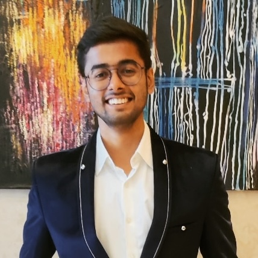
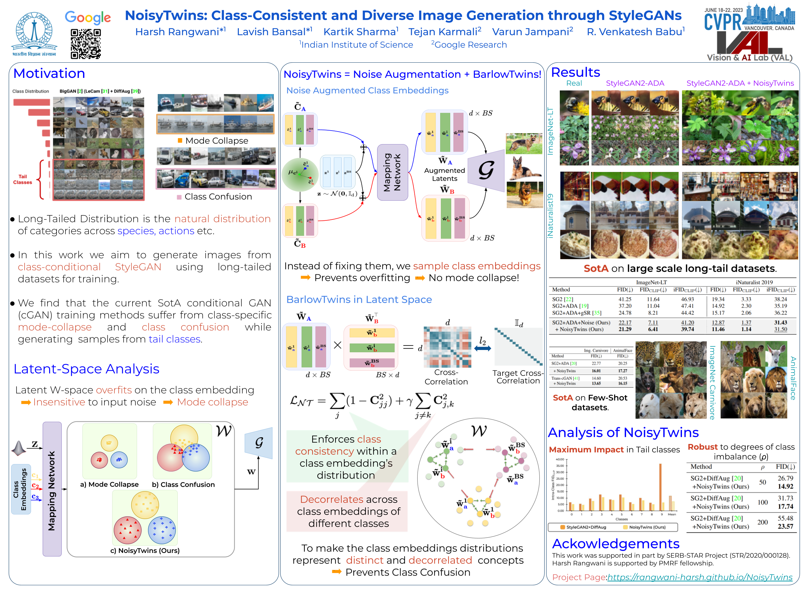
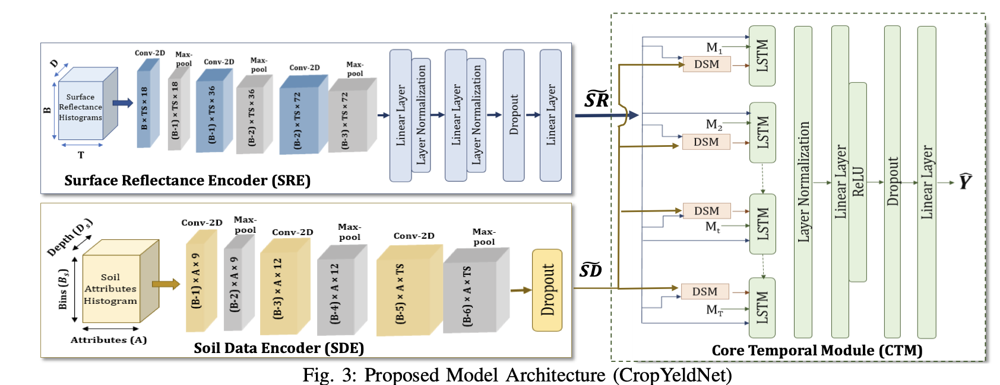
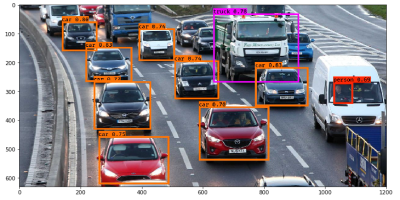
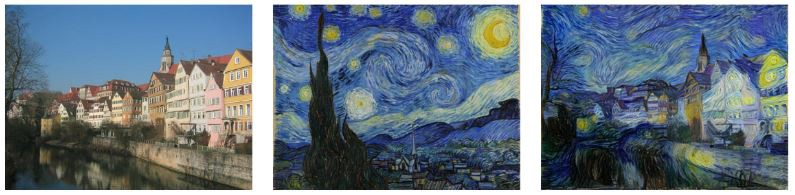

|
Kartik Sharma I am an incoming MSR student at Carnegie Mellon University (Fall 2025), interested in building intelligent systems that learn from — and reason across — diverse forms of data. Previously I was a senior engineer at Samsung R&D Institute in Bangalore, where I worked in Language AI team on building safety filter for Samsung's LLM and LVM. I was also responsible for deploying on-device LLM and LVM models on Samsung's flagship devices. I did my undergrad thesis at Vision and AI Lab supervised by Prof. R. Venkatesh Babu, where I worked on long-tail image generation using StyleGANs. I have also collaborated with Prof. Poonam Goyal in ADAPT Lab where I worked on a generalized multimodal approach for early crop-yield prediction. My research spans computer vision, natural language processing, and multi-modal deep learning, with a strong focus on making AI systems more ethical, transparent, and deployable in real-world settings. Right now, I'm looking forward to expand my expertise in reinforcement learning, multi-modal reasoning and its applications in robotics — aiming to design systems that simplify human tasks through intelligent perception and decision-making. My goal is to bridge research with impactful applications, ensuring AI benefits people at scale. I did my undergrad at BITS Pilani, in Computer Science and Economics (dual degree). |
 |
{kind=link}
ResearchI am fascinated by how humans integrate different sensory signals — sight, sound, language — to understand and interact with the world. My research aims to replicate this capability in artificial systems, enabling them to process and reason across multiple modalities of data. This includes advancing methods in multi-modal deep learning for tasks like language-vision reasoning, domain adaptation in real-world environments, and robust performance in long-tailed data distributions. I also aim to embed ethical frameworks into AI, ensuring fairness, transparency, and alignment with societal values. My work has explored diverse methodologies — from contrastive learning for cross-lingual object grounding, to GAN-based strategies for generating diverse images in limited data scenarios, to building RAG pipelines for large language models. I focus on designing architectures and training strategies that improve generalization, reduce biases, and scale efficiently to deployment. Current & Future WorkCurrently, I'm looking forward to pursue research at CMU as a Robotics master's student in the domain of reinforcement learning and multi-modal reasoning for robotics — integrating perception, language understanding, and decision-making, to create systems that can adapt to dynamic environments. I am particularly interested in aligning diffusion and GAN-based generation models with reward signals for more controllable outputs, and in developing multi-modal architectures capable of reliable reasoning across diverse contexts. Looking ahead, I plan to explore how these systems can be deployed in the physical world, with a focus on assisting humans in high-stakes and complex tasks where safety, adaptability, and transparency are required. I am open to exploring new research directions as well, so please feel free to reach out! |
Publications |
|

|
NoisyTwins: Class-Consistent and Diverse Image Generation through StyleGANs Harsh Rangwani, Lavish Bansal, Kartik Sharma, Tejan Karmali, Varun Jampani, R. Venkatesh Babu Proceedings of the IEEE/CVF Conference on Computer Vision and Pattern Recognition (CVPR 2023) Link to Paper / Project Page / Code |
|

|
A Generalized Multimodal Deep Learning Model for Early Crop Yield Prediction Arshveer Kaur, Poonam Goyal, Kartik Sharma, Lakshay Sharma, Navneet Goyal IEEE International Conference on Big Data (Big Data 2022) Link to Paper |
Experience
Research Engineer — Samsung R&D Institute India (Nov 2023 – Present)
Data Scientist — PrivateBlok (Feb 2023 – Nov 2023)
Project Assistant — Video Analytics Lab, IISc Bangalore (Aug 2022 – Jan 2023)
Software R&D Intern — Samsung R&D Institute India (May 2022 – Jul 2022) |
Independent Projects |

|
Wake-up Word Detection
Kartik Sharma Independent Project, July 2021 project page / code Constructed a speech dataset from synthesized data and implemented a trigger word detection model with over 90% accuracy. Trained a GRU(Gated Recurrent Units) to detect when someone has finished saying the word "activate". |
|

|
Car Detection with YOLO: You Only Look Once
Kartik Sharma Independent Project, June 2021 project page / code Implemented real-time object detection on a car dataset using the YOLO model, which was further improved using a U-net architecture. The YOLO model was stacked with Non-max suppression layers using IOU grid analysis to obtain the most accurate boundary boxes. |
|

|
Art Generation with Neural Style Transfer
Kartik Sharma Independent Project, June 2021 project page / code Used transfer learning on the VGG-19 network to generate new artistic images. Implemented a cost function that minimizes the content and style cost by running both the images through the pre-trained VGG-19 model. |
|
Thank you for visiting my site, and if you have any inputs, I would love to hear from you! Feel free to steal this website's source code. Do not scrape the HTML from this page itself, as it includes analytics tags that you do not want on your own website — use the github code instead. |